Karibu. Step into my world.
Strategy and creativity, practised as one discipline.
I’m Warui Nduati, a brand, marketing, and communications strategist and creative director based in Nairobi. For more than a decade I’ve built brands, campaigns, and communication systems across media, technology, and social impact in East Africa.
About
I’m a strategic creative working where brand, narrative, systems, and experience meet. My practice brings creative direction and operational thinking together, shaped by more than a decade of building, leading, and advising.
I started out in operations and digital marketing before teaching myself design, and that mix has stayed with me. I treat strategy and creativity as a single discipline, designing not just what gets made, but how it evolves, performs, and keeps delivering over time.
Along the way I’ve led digital and creative work in national media, built digital marketing in technology, and led communications in social impact. Nairobi is home, and it shapes how I read every brief.
Training Certificate in Digital Marketing, Africa Digital Marketing Institute. Self-taught in design.
Practice
Four connected areas, from the first strategic question to the finished experience.
-
Brand strategy and narrative
Positioning organisations and products through clear messaging, strong identity systems, and cohesive brand expression.
- Brand strategy and positioning
- Narrative and messaging frameworks
- Identity systems and guidelines
- Institutional and corporate communications
-
Cultural marketing and campaigns
Integrated campaigns that connect brands with people through culture, media, and shared experiences.
- Integrated marketing communications
- Experiential marketing, events, and festivals
- Brand partnerships and sponsorship
- Go-to-market strategy
-
Audience growth and digital ecosystems
Content and platform systems that expand reach, deepen engagement, and build loyalty over the long term.
- Content strategy and storytelling
- Digital marketing and SEO
- Social media content systems
- Website and platform strategy
-
Creative direction and production
Directing the craft that brings strategy to life, on screen, on stage, in print, and in people’s hands.
- Creative direction and design
- Strategy presentations and company profiles
- Audio-visual and documentary production
- Merchandise and brand experiences
How I work
Every project moves through the same four steps, so the thinking is sound before anything is designed, and everything we make ladders back to what you set out to achieve.
-
Frame
We agree on the real problem, the audience, and what success looks like, in a few sharp sentences.
-
Find the insight
I dig into the audience, the market, and the competition, with an eye for local nuance, to find what is true and useful.
-
Build the idea
The insight becomes a clear position and a set of creative routes, each with its own messages, channels, and measures.
-
Make it real
We turn the chosen route into finished work, from identities and campaigns to decks, documents, and productions.
Tale of Craft
My portfolio series. Each volume sets selected projects in brand, narrative, systems, and experience alongside short reflections on how they came to be. Here is a look inside the latest.
-
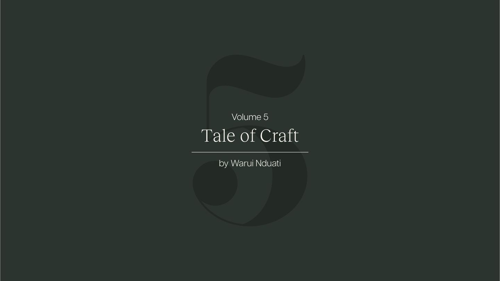
-
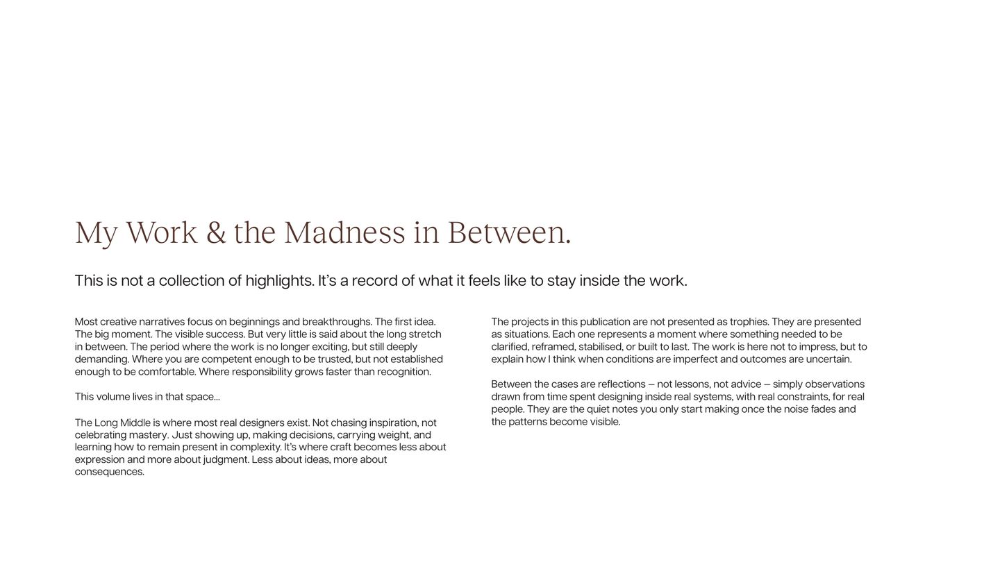
-
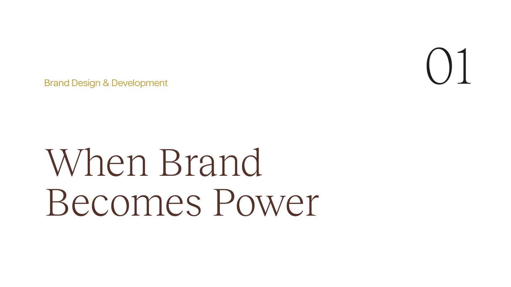
-
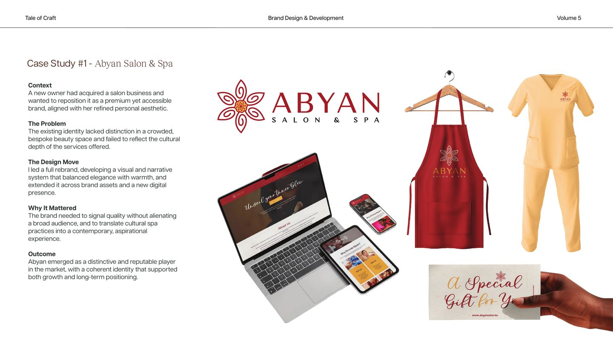
-
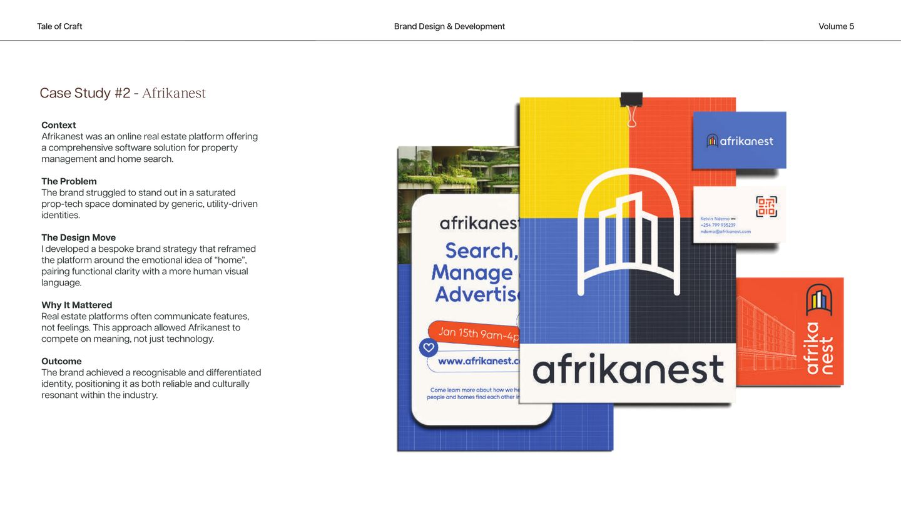
-
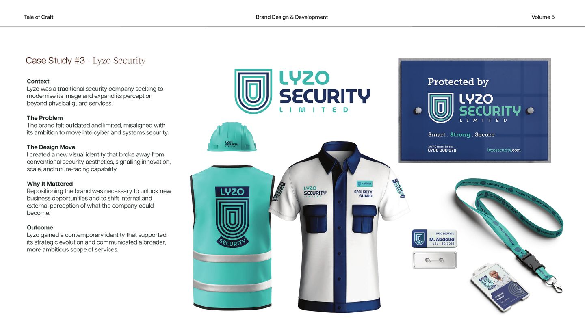
-
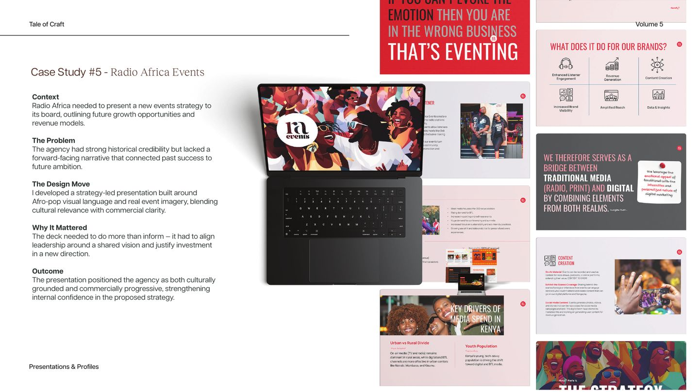
-
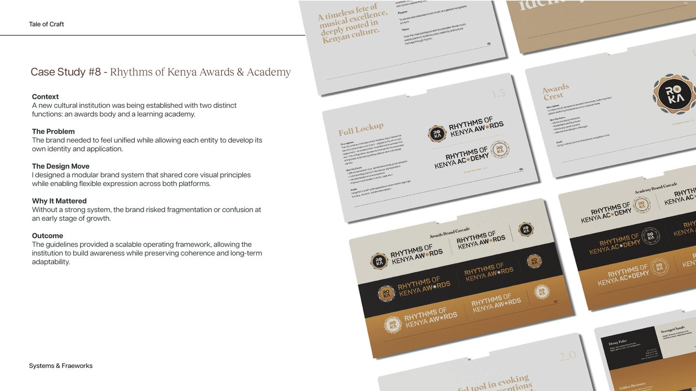
-
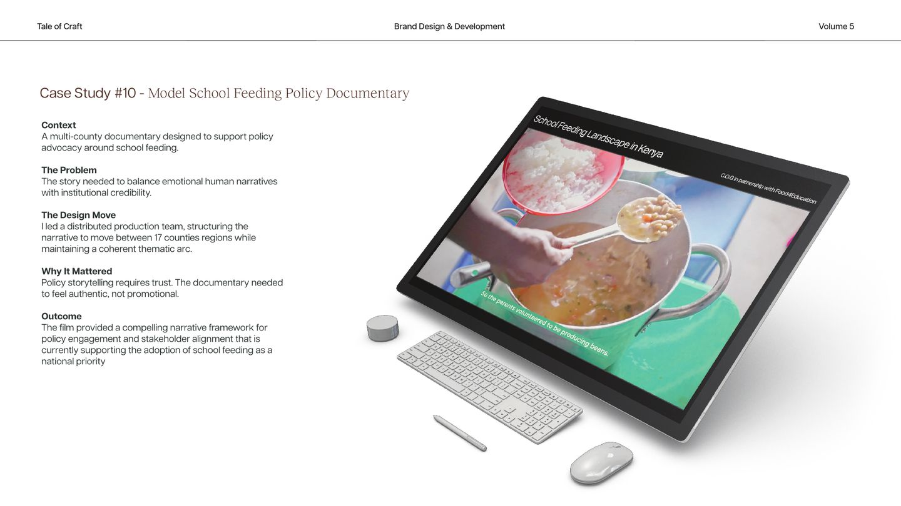
-
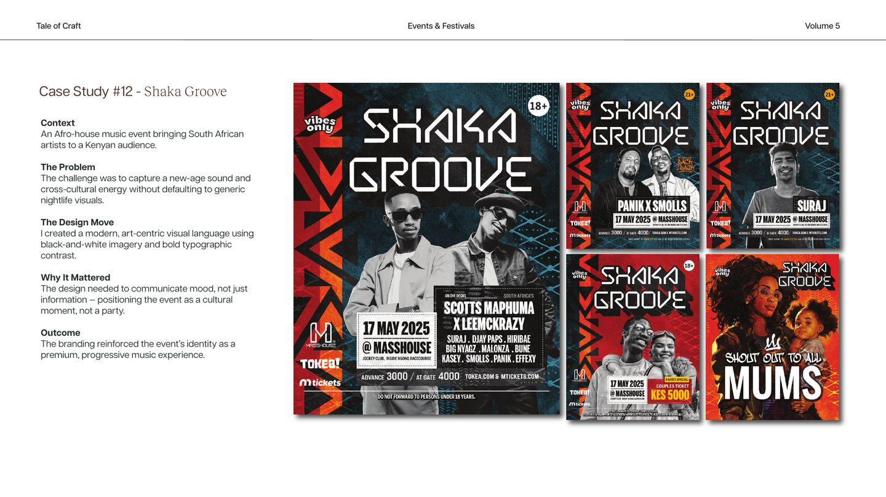
-
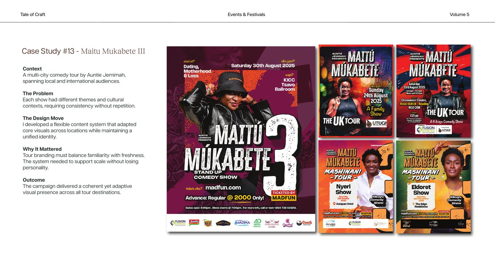
-
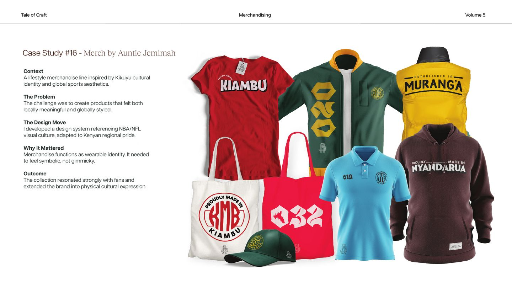
On Substack
Beyond the volumes, my thoughts and opinions live on Substack. Read them there
In others’ words
What it’s like to work together, from people who have.
-
Warui has a rare ability to slow a room down until the real problem is clear. Then he builds work that holds up long after the launch.
Name Surname
Role, Organisation
Ask: a leader you have reported to
-
He gave shape to a brief we had struggled to put into words. The identity he built still guides how we show up.
Name Surname
Role, Organisation
Ask: a client whose brand you shaped
-
Working with Warui is like working with a good editor. He knows what to keep, what to cut, and why it matters.
Name Surname
Role, Organisation
Ask: a creative collaborator
Conversations I welcome
I’m always glad to talk about work that needs clear thinking and careful craft.
-
Brand and narrative strategy
For organisations at a turning point, finding the position and the story that hold everything together.
-
Creative direction
For campaigns, events, and cultural platforms that need one clear idea carried all the way through.
-
Advisory
For leadership and marketing teams who want a thinking partner on brand, communication, and creative quality.
-
Talks and workshops
On creative practice, brand stewardship, and what it takes to stay inside the work.
Get in touch
- consult@waruinduati.com
- Phone and WhatsApp
- +254 710 101 785 or message on WhatsApp